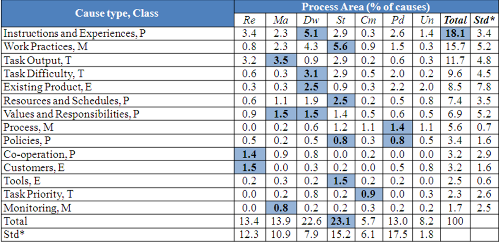

What's in this paper?
- 648 problem causes from 4 root cause analysis sessions were analyzed.
- Two dimensional classification system was developed to analyze the causes.
- On one dimension the causes are mapped to the process areas (Re-Requirements engineering, Ma-Management, Dw-Development Work, St-Software Testing, Cm-Change Management, Pd-Product Release and Deployment, and Un Unknown)
- On other dimension the causes are classified based on their type to four high level classes (P-people, M-Methods, T-Tasks, E-Environment)
- The software testing process area included the highest number of causes, which was mainly divided into the wrong work practices, lack of instructions and experiences, insufficient task output, task difficulty, and wrong resources and schedules
- The lack of instructions and experiences type included the highest number of causes, which was mainly divided into the requirements engineering, development work, software testing, and product release and deployment.
Abstract
Root cause analysis (RCA) is a structured investigation of a problem to detect the causes that need to be prevented. We applied ARCA, an RCA method, to target problems of four medium-sized software companies and collected 648 causes of software engineering problems. Thereafter, we applied grounded theory to the causes to study their types and related process areas. We detected 14 types of causes in 6 process areas. Our results indicate that requirements engineering, development work, and software testing are the most common process areas, whereas lack of instructions and experiences, insufficient work practices, low quality task output, task difficulty, and challenging existing product are the most common types of the causes. As the types of causes are evenly distributed between the cases, we hypothesize that the distributions could be generalizable. Finally, we found that only 2.5% of the causes are related to software development tools that are widely investigated in software engineering research.
Ref
Lehtinen. T. O. A., and Mäntylä M. V., "What Are Problem Causes of Software Projects? – Data of Root Cause Analysis at Four Software Companies" in Proceedings of the 5th International Symposium on Empirical Software Engineering and Measurement (ESEM), pp. 388-391, 2011, Banff, Canada
{kind=link}